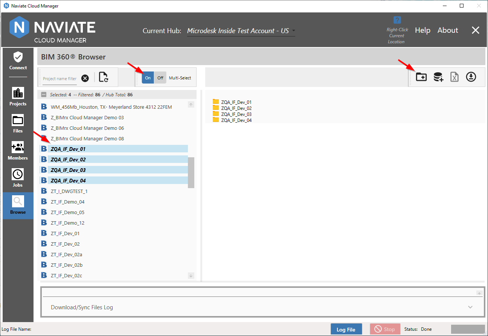
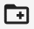
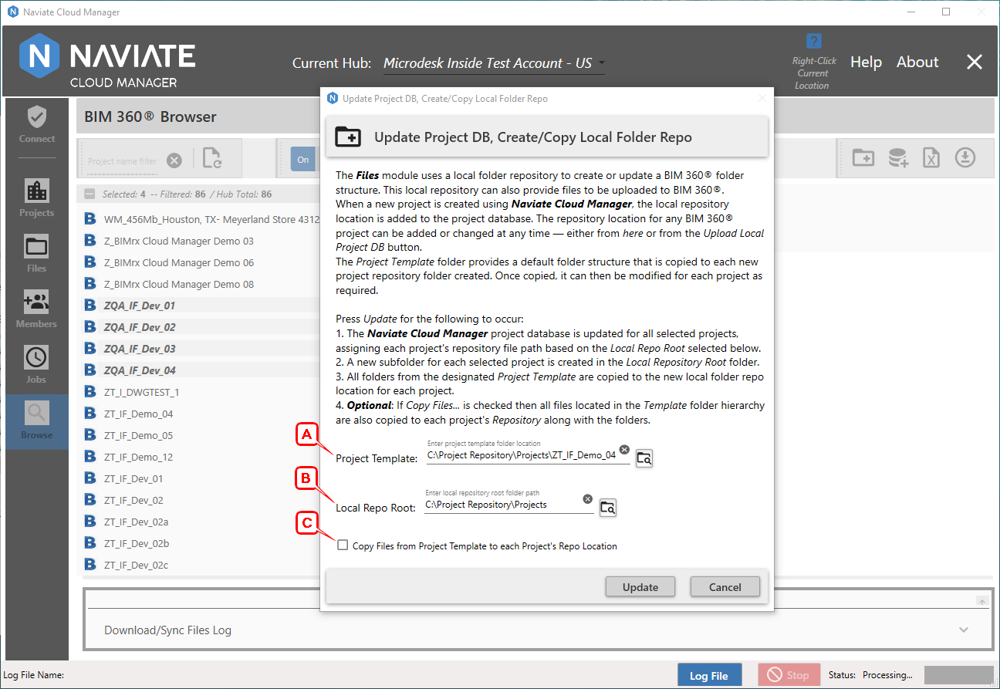
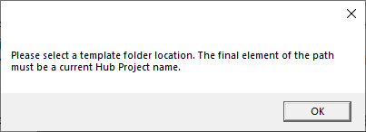
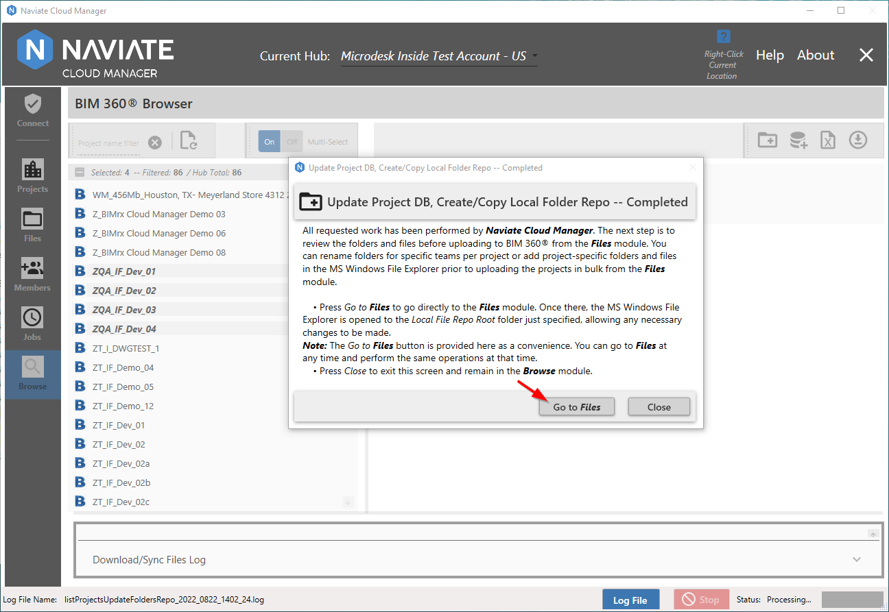
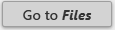
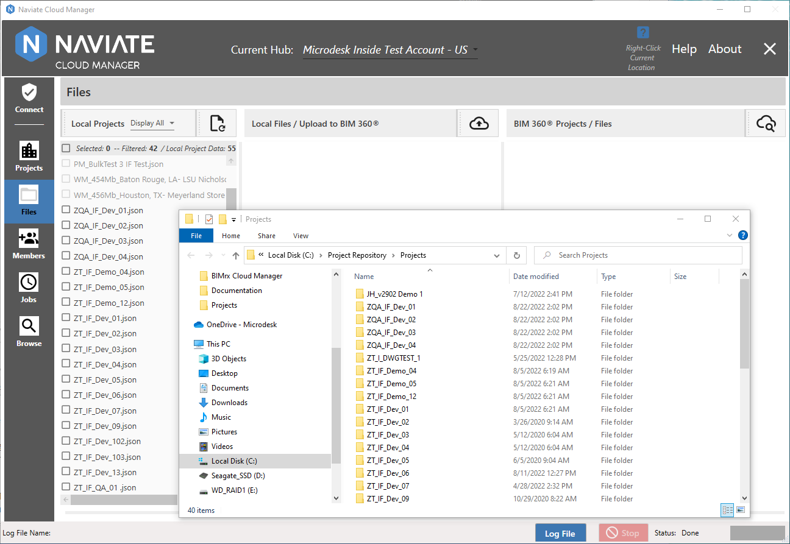

Update Project DB, Create/Copy Local Folder Repo
The purpose of the functionality described here is to assist the BIM 360® Administrator in setting up Naviate Cloud Manager for uploading a local folder structure— and optionally files— to one or more BIM 360® projects. This is done by:
- Identifying a local BIM 360® project template— consisting of a specified folder structure— to be replicated in the cloud for each selected project. If the same files are to be uploaded for each project, make sure they are included as part of the initial template creation process.
- Copying it to local repository, creating a subdirectory for each project and placing the folders there.
- Placing the above information into the Naviate Cloud Manager Project database for both current and future reference by the Files module.
- Perform the BIM 360® update.
Optionally, project-specific files can be added to each project repository subdirectory. Then, all that needs to be done is to go to the Files module and upload/synchronize the files to BIM 360®. For more information regarding this process, refer to Add Files to Projects in general, and specifically to Upload/Sync the Project Folders and Files.
The use case just described is where the Update DB, Copy to Repo, Upload to BIM 360® feature comes in. After selecting the target projects and choosing from the several options presented, all of the following are performed by pressing a single button.
- Update DB — Add or update a project's repository File Path in the Naviate Cloud Manager database. The idea here is to perform this task along with the following tasks. If this is the only task that needs to be performed, it may be done using the standalone Add Existing Projects to Database process, described in the following documentation topic.
- Copy To Repo — Populate a local project repository based on a standard folder structure. This could be an existing project's folders or it could exist strictly to serve as a template for other projects. This template structure may contain files located throughout the folder hierarchy.
- Perform an Update/Sync operation to take all folders and any files located within the folder structure and upload them to BIM 360®. For all files, it will upload these if the contents are different from the BIM 360® file and if they have a later modified date. To perform just this operation apart from the above two processes, use the Upload/Sync the Project Folders and Files feature located in the Files module.
To begin the process, set the Multi-Select toggle to On and select the desired projects. Each project selected will have all folders— and optionally the files— uploaded to it.

Once all the projects requiring update and upload have been been selected, press the Update DB, Copy to Repo, Upload to BIM 360®  button to initiate the process.

The dialog that appears presents both the mandatory (A and B) and optional (C) settings.
A: Project Template (required) indicates the location of the folder containing the directory hierarchy and, optionally, any files to be uploaded to BIM 360®. The final element of the file path must be the name of a project currently active on BIM 360®. If not, the following message appears:

By "element" we refer to the final section of the file path, beginning after the "\". For example, if the full path entered is:
C:\Project Repository\Projects\ZT_IF_Demo_04
then ZT_IF_Demo_04 is the final element of the path. And since this is a valid project name for the current login Hub, the system will accept it.
Note — When Naviate Cloud Manager adds a project to BIM 360®, it automatically adds a folder with the project name appended to the File Path location indicated in the Project Template spreadsheet. For more information, please refer to Create New Projects, under Enter the Spreadsheet Data.
B: Local Repo Root (required) refers to the File Path of the local project repository. When the Add Files to Projects process just referred to adds a project, it also adds an entry for the project into the local Project database. In addition to the project name and other project information, it also adds the project file path location entered on the spreadsheet.
Tip — The entry made here corresponds to the project File Path specified when using Create New Projects. Sharing this same location with projects entered outside of Naviate Cloud Manager provides a consistent way to maintain the local folder structure and data for these projects.
The Local Repo Root specified here is entered by the current process into the Project database. This allows the project to appear in the Files module where it can the upload files to BIM 360®. Do not add the project name here. It is important to only enter the parent file path. This makes it possible to select multiple projects and assign a single local repository to them all.
C: Copy Files from Project Template to each Project's Repo Location (Optional). This option addresses the situation where the designated template location contains files embedded in the folder structure. According to the this option's settings, the files will or will not be copied in addition to the folder structure. If checked and the files are copied, they will be placed into the same subdirectory location in which they are located in the source folder.
When all settings have been made on the dialog window, press the Update button to launch the process.
Once the Update process has completed, the following dialog window appears, providing additional explanation and further instructions:

Pressing the Close button completes the process, with the current navigation in the application precisely where it was when the process was invoked.
However, pressing the  takes the user directly to the Files module and opens the Windows File Explorer to the location Local File Repo location specified prior to running the operation.

From here, the next step is to copy files into the repository for each of the projects just added. This may be done as a result of direct navigation to the Repository on completion of the update process, as just demonstrated. It can just as easily be performed at any time by simply navigating to the Files module and performing the operation using the tools provided there. This is especially easy with the new Open Repo button provided in the Files Local Project Browser.
Please Note — The Files Local Project Browser now provides a button for each Local Repository project. Each Local Repository that is selected from the left-hand column and displays the current Local Repository contents now also provides a button to open the repository for that item. Please refer to Locate Project Files for more information.